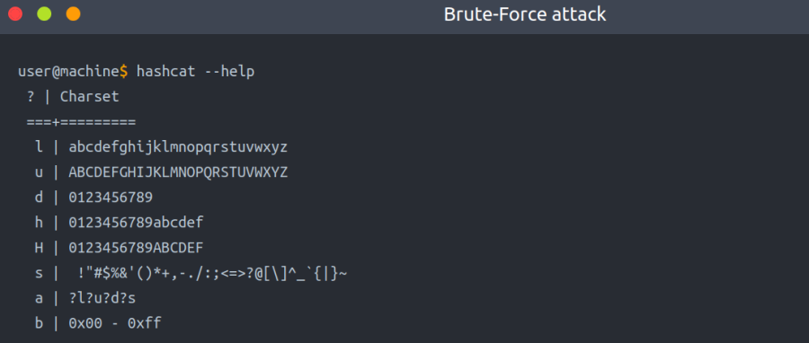
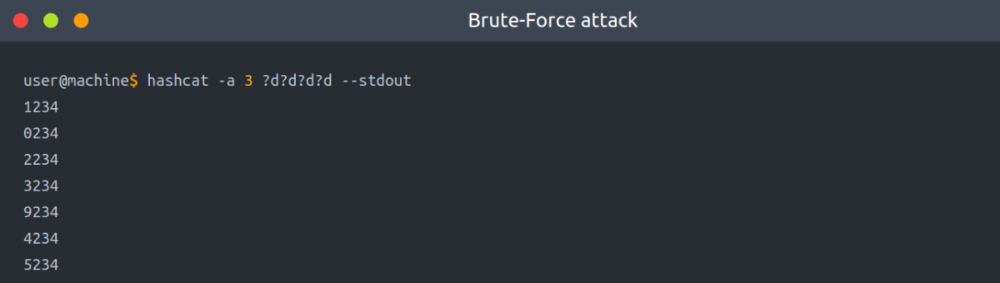

Dictionary attack
We use hashid to get the type of hash & then use hashcat in Dictionary mode to crack it using a wordlist.
Example:
hashcat -a 0 -m 0 f806fc5a2a0d5ba2471600758452799c /usr/share/wordlists/rockyou.txt
-a 0 sets the attack mode to a dictionary attack
-m 0 sets the hash mode for cracking MD5 hashes; for other types, run hashcat -h for a list of supported hashes.
f806fc5a2a0d5ba2471600758452799c this option could be a single hash like our example or a file that contains a hash or multiple hashes.
/usr/share/wordlists/rockyou.txt the wordlist/dictionary file for our attack
We run hashcat with --show option to show the cracked value if the hash has been cracked:
Brute-Force attack
A brute-force attack aims to try all combinations of a character or characters. For example, let's assume that we have a bank account to which we need unauthorized access. We know that the PIN contains 4 digits as a password. We can perform a brute-force attack that starts from 0000 to 9999 to guess the valid PIN based on this knowledge. In other cases, a sequence of numbers or letters can be added to existing words in a list, such as admin0, admin1, .. admin9999.
hashcat has charset options that could be used to generate your own combinations. The charsets can be found in hashcat help options.

The following example shows how we can use hashcat with the brute-force attack mode with a combination of our choice.
hashcat -a 3 ?d?d?d?d --stdout

-a 3 sets the attacking mode as a brute-force attack
?d?d?d?d the ?d tells hashcat to use a digit. In our case, ?d?d?d?d for four digits starting with 0000 and ending at 9999
--stdout print the result to the terminal
Example:
hashcat -a 3 -m 0 05A5CF06982BA7892ED2A6D38FE832D6 ?d?d?d?d